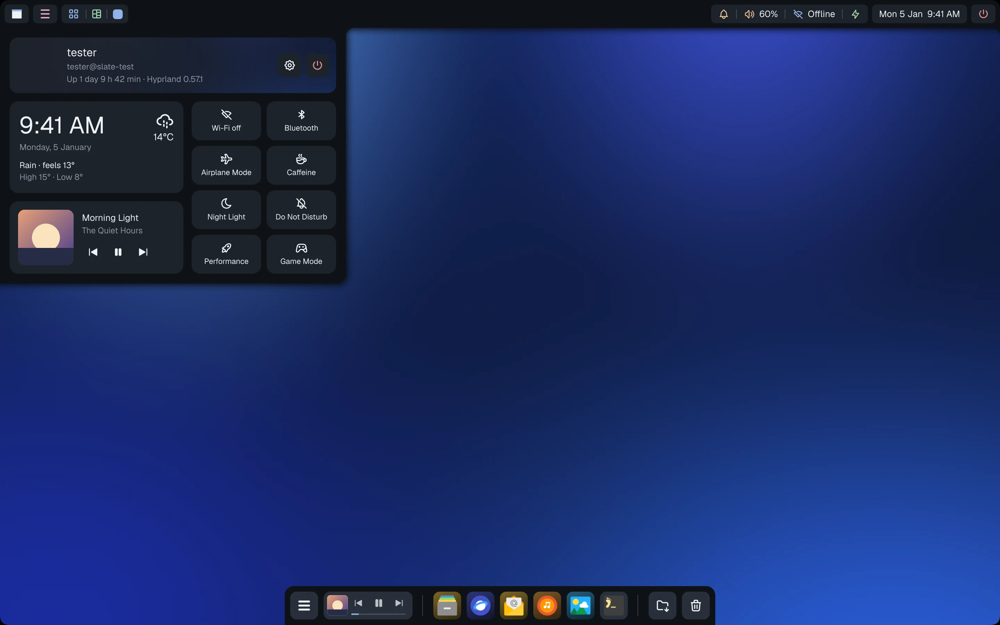

Getting started
Introduction
Slate is a calm desktop for Linux with a premium feel. It gives Hyprland a menu bar, a dock, a launcher, switchers, notifications, its own lock screen and one Settings app for all of it, with everything where you'd expect to find it.
What Slate is
Slate is a desktop shell: everything you see and use around your windows. It runs on Hyprland, which draws the windows, and is built with Quickshell.
It installs as a session of its own. After installing, Slate appears on your login screen
next to the desktop you already have, and nothing about that desktop changes. Your usual
~/.config/hypr is left alone too: Slate's session runs Hyprland with Slate's own config, so you
can try it and go back just by picking your old session at login.

What makes it different
We wanted Linux to feel as polished as premium-feeling operating systems. Slate has all the features you'd expect from a desktop, and a few more, each where you'd expect to find it.
- Ready from the start. Sensible defaults that work out of the box, and a Welcome window for the few choices worth making.
- Every setting in one place. One searchable Settings app. If you'd rather keep your own Hyprland config and overrides, you can: Slate never overwrites them (Your own config).
- Yours, automatically. Colors from your wallpaper, dark at sunset, your other apps themed to match. As much as possible just happens, and Slate blends into the choices you make.
- The best of everything. Inspired by macOS, Windows, GNOME, KDE and tiling window managers, so it feels familiar whichever you're coming from. Linux veterans will find Hyprland still underneath, with every key and rule theirs to change.
What's in it
A quick look at the main parts, each with a page of its own:
- The menu bar with your workspaces, the window you're in and your status icons, and panels for everything on it.
- The dock, with pinned and running apps, what's playing, Downloads and a waste basket.
- The launcher: tap Super and type to find apps, settings, files and windows, do sums and run commands.
- Windows your way: tiling, side stack, scrolling, stacking or floating with title bars, for each workspace (Windows), a window switcher with live previews, a workspace overview, and Spaces to save a set of workspaces and bring it back.
- Notifications and on-screen indicators, clipboard history and emoji, screenshots and night light.
- A look that's yours: themes, glass and fonts, wallpapers that shape the colors, icons and pointers, and your other apps in the same colors.
- Your computer: displays, keyboard and mouse, sound, power, network and Bluetooth, printers and the webcam.
- A lock screen and an optional matching login screen, and Private Mode for turning off the microphone, camera and screen capture in one go.
- Nova, an assistant that asks an AI agent you already use to do things for you, off until you switch it on.
- The Settings app, with every setting searchable, and updates in one click.
An early preview
Slate is moving quickly and is still an early preview, so you may meet a bug or two. If you do, we'd be grateful to hear about it in a GitHub issue: Troubleshooting has what to include. Your other desktop stays just as it was the whole time, so you can always go back to it at login.
Who makes it
Slate is made by Dayle Rees, an experienced software engineer and Linux user, built with Claude, Anthropic's AI model. It's open source under the MIT license, on GitHub.
It stands on the work of two projects and the people behind them: Hyprland, by Vaxry and contributors, and Quickshell, by outfoxxed and contributors. Thank you to them, and to the makers of Geist, Tabler Icons, Papirus and Bibata.
Ready to try it? Installing Slate takes a few minutes, and Your first login shows you around.